示範題目：The Plastic-Free Night Market（SDG 12 責任消費與生產）。畫面是實際操作截圖，除了第 4 步的兩張，都來自線上版。
打開 APP，在首頁按「SDGs 英文闖關」。第一次進來清單是空的，按「製作新的闖關遊戲」開始。
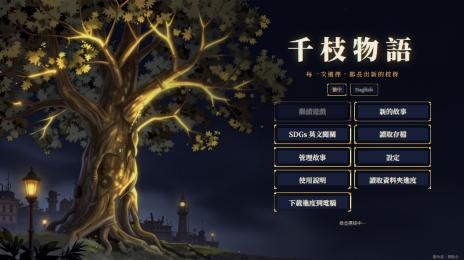
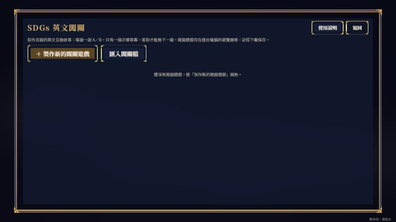
依照學習單填寫：遊戲名稱、SDG 目標、角色（名字與一句介紹）、地點、問題、目標。問題與目標可以寫中文，AI 會改寫成英文。
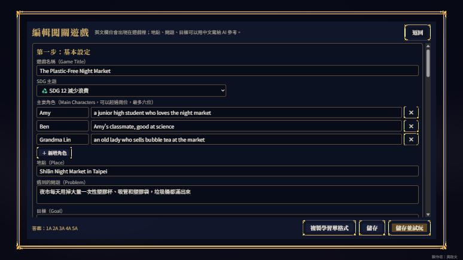
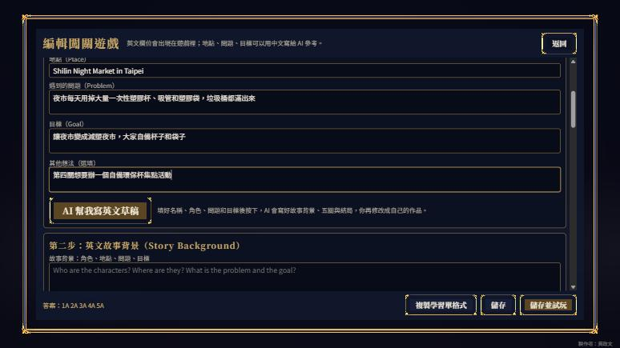
第一次用 AI 會提醒要先設定 NVIDIA API Key。照視窗步驟到 build.nvidia.com 申請，貼上後按「儲存並測試」。金鑰只存在自己的瀏覽器裡。
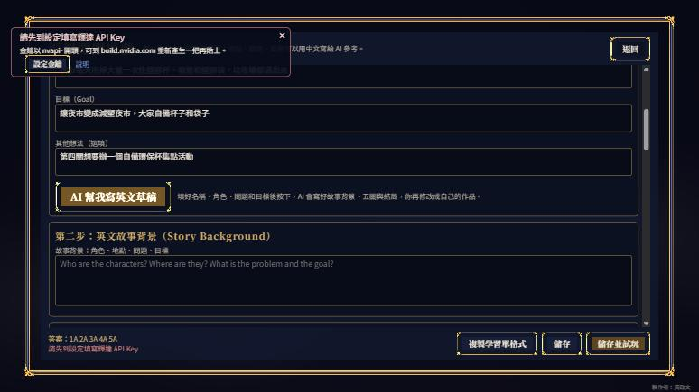
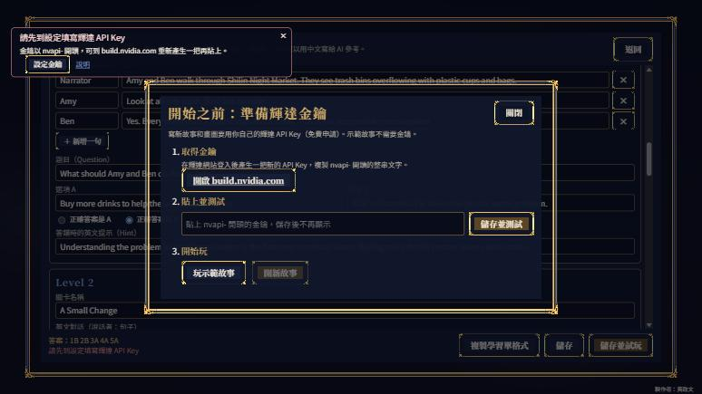
金鑰就像密碼，不要貼到作業、簡報或群組裡。
AI 依照你的設定寫出故事背景、五關對話、五個 A／B 問題（每題只有一個正確答案）、答錯提示和結局，APP 顯示通常要 1 到 3 分鐘。
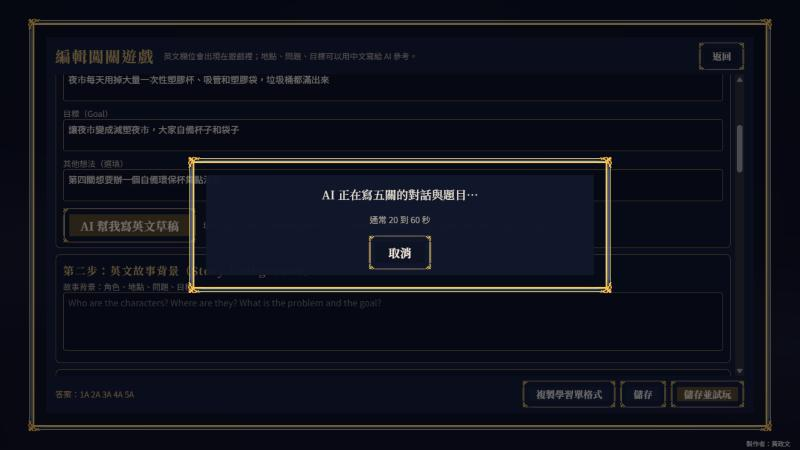
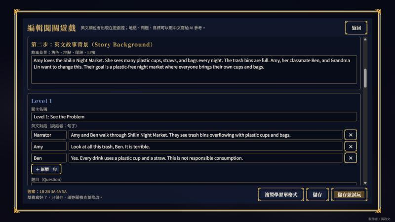
AI 寫的只是草稿，一定要自己讀過。每一關可以改標題、對話、問題、選項 A／B、正確答案、答錯提示；結局也能增刪台詞。
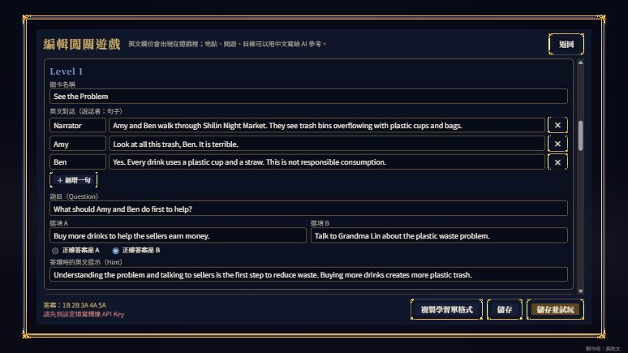
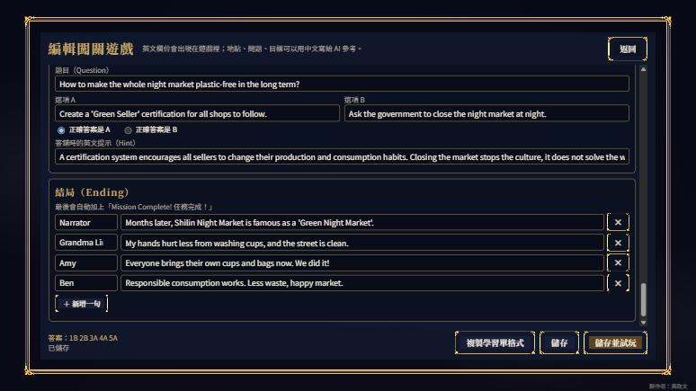
檢查重點：英文是否讀得懂？正確答案真的只有一個嗎？提示有沒有說明為什麼？
開場、五關、結局各一張，共 7 張。按「🎨 AI 畫出全部缺少的插圖」一次畫完（本例約 25 秒）。不滿意的單張可以按「🎨 重畫」。
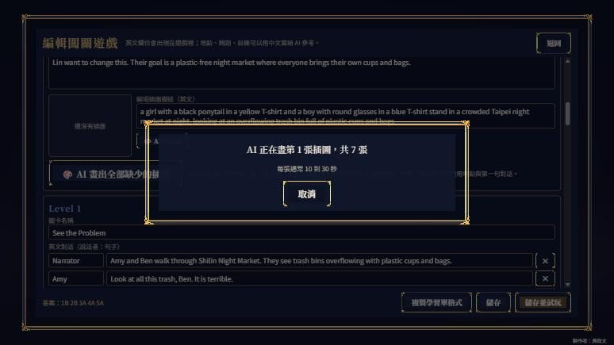
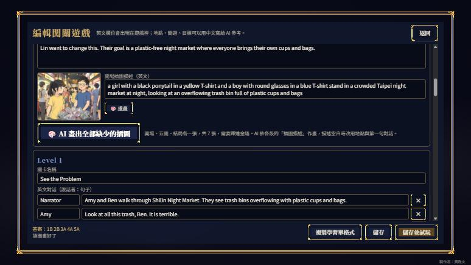
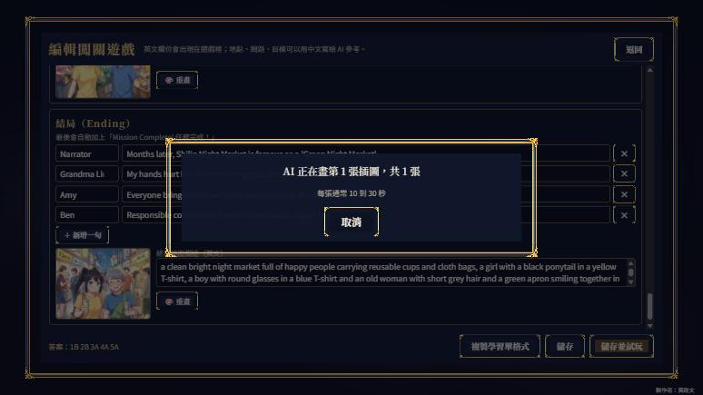
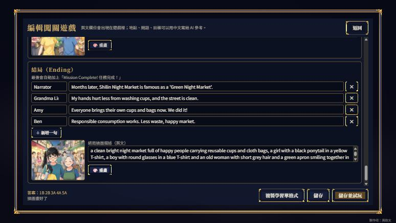
插圖描述用英文寫，同一個角色每次寫一樣的外觀，例如 a girl with a black ponytail in a yellow T-shirt，畫出來比較像同一個人。不要寫名字和文字。即使這樣，每張圖的長相仍可能有差異，需要時多重畫幾次挑選。
按「儲存並試玩」。作品會出現在闖關清單，可以再「試玩」「編輯」「下載」分享給同學。
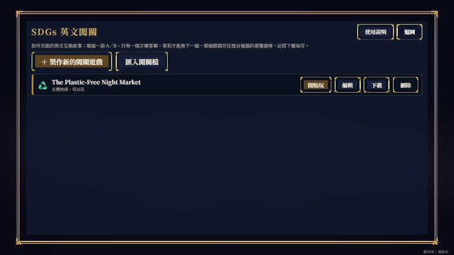
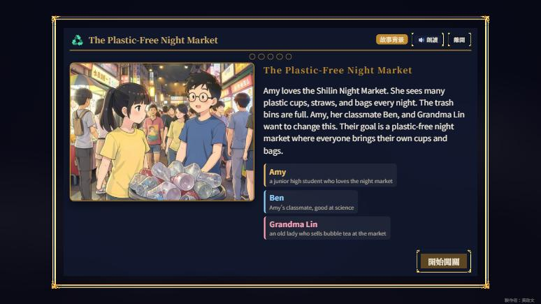
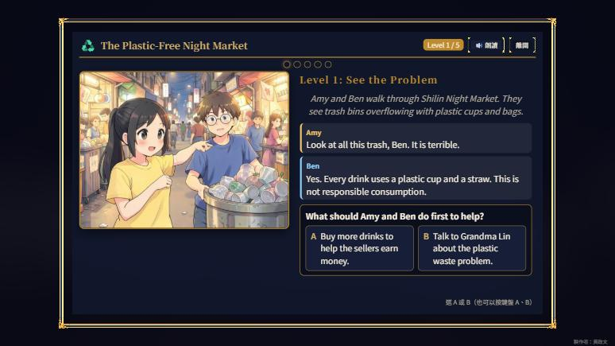
答錯不會往下走，會顯示提示讓你再想一次；答對才會出現「下一關」。
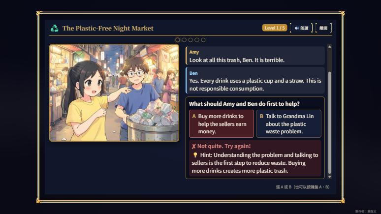
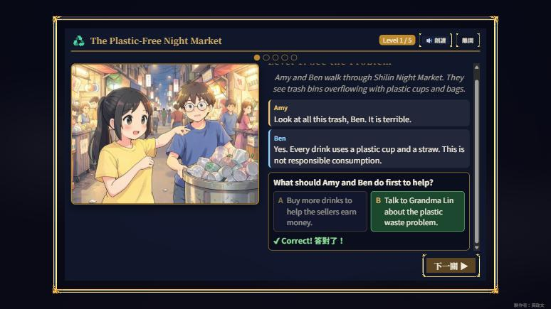
每一關都有自己的插圖與對話，上方圓點顯示目前進度。
| 關卡 | 問題 | 正確答案 |
|---|---|---|
| 1 See the Problem | What should Amy and Ben do first to help? | B 找 Grandma Lin 談塑膠垃圾問題 |
| 2 A Small Change | What is the best way to encourage customers to bring cups? | B 自備杯給小折扣 |
| 3 Reusable Bags | How can they reduce plastic bag use effectively? | A 塑膠袋收費、賣布袋 |
| 4 Stamp Card Event | What makes the stamp card event successful for SDG 12? | A 大力宣傳並說明環保好處 |
| 5 Market Leaders | How to make the whole night market plastic-free in the long term? | A 建立「Green Seller」認證 |
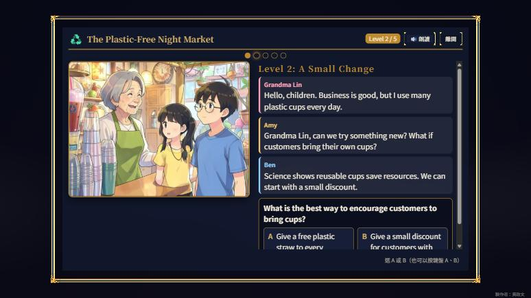
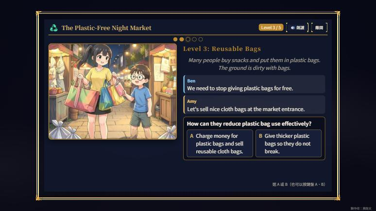
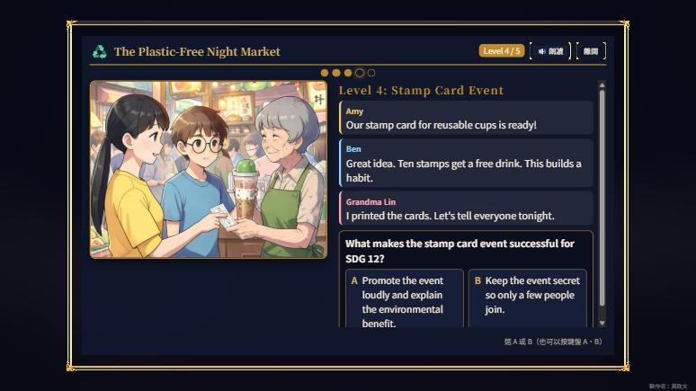
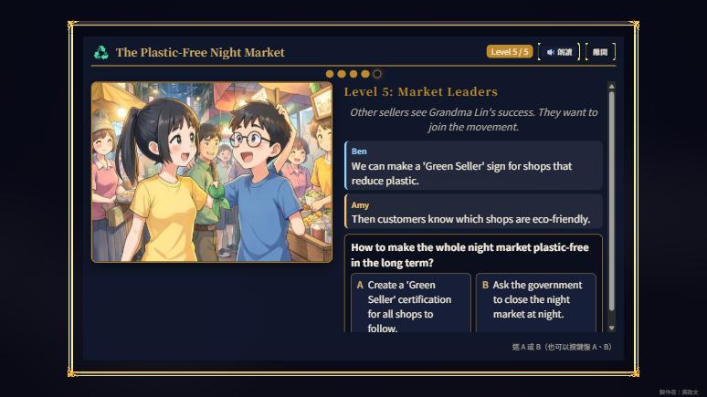
五關都答對後進入結局，最後出現「Mission Complete! 任務完成！」。星星看答錯次數：全對 3 顆，答錯 1 到 2 次 2 顆，更多次 1 顆。
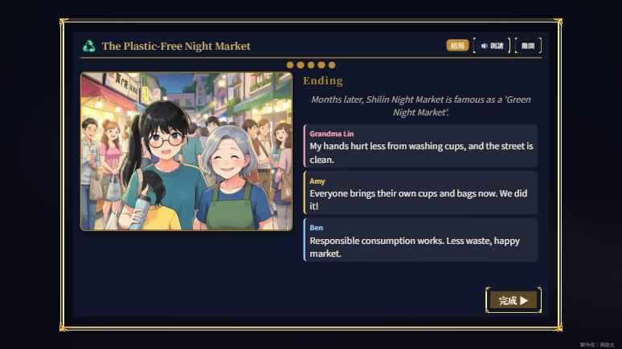
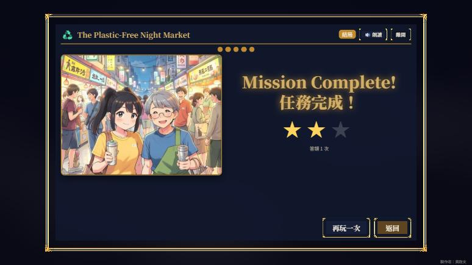
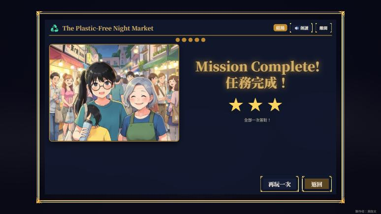
1. 選一個 SDG 目標。 2. 想好 2 到 3 個角色、一個地點、一個問題和目標。 3. 讓 AI 寫草稿，再自己修改英文與答案。 4. 畫插圖、試玩，請同學玩玩看。
在 APP 按「下載」得到的闖關檔會連同已畫好的插圖一起打包，同學匯入後直接看到原作的插圖。上方的示範闖關檔是加入這項功能前下載的，只有文字與插圖描述，匯入後按「AI 畫出全部缺少的插圖」即可補上（畫出來會和截圖不同）。